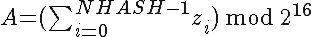
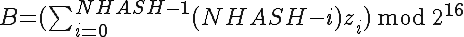
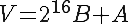
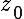
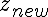
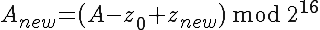
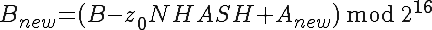
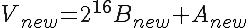
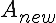

[ Index ]
A key component for the efficient storage of multiple revisions of a file in fossil repositories is the use of delta-compression, i.e. to store only the changes between revisions instead of the whole file.
This document describes the encoding algorithm used by Fossil to generate deltas. It is targeted at developers working on either fossil itself, or on tools compatible with it. The exact format of the generated byte-sequences, while in general not necessary to understand encoder operation, can be found in the companion specification titled "Fossil Delta Format".
The entire algorithm is inspired by rsync.
The encoder takes two byte-sequences as input, the "original", and the "target", and returns a single byte-sequence containing the "delta" which transforms the original into the target upon its application.
Note that the data of a "byte-sequence" includes its length, i.e. the number of bytes contained in the sequence.
The algorithm has one parameter named "NHASH", the size of the "sliding window" for the "rolling hash", in bytes. These two terms are explained in the next section. The value of this parameter has to be a power of two for the algorithm to work. For Fossil the value of this parameter is set to "16".
The algorithm is split into three phases which generate the header, segment list, and trailer of the delta, per its general structure.
The two phases generating header and trailer are not covered here as their implementation trivially follows directly from the specification of the delta format.
This leaves the segment-list. Its generation is done in two phases, a pre-processing step operating on the "original" byte-sequence, followed by the processing of the "target" byte-sequence using the information gathered by the first step.
A major part of the processing of the "target" is to find a range in the "original" which contains the same content as found at the current location in the "target".
A naive approach to this would be to search the whole "original" for such content. This however is very inefficient as it would search the same parts of the "original" over and over. What is done instead is to sample the "original" at regular intervals, compute signatures for the sampled locations and store them in a hash table keyed by these signatures.
That is what happens in this step. The following processing step can then the compute signature for its current location and then has to search only a narrow set of locations in the "original" for possible matches, namely those which have the same signature.
In detail:
If the "original" is at most NHASH bytes long no compression of changes is possible, and the segment-list of the delta consists of a single literal which contains the entire "target".
The rolling hash described below and used to compute content signatures was chosen not only for good hashing properties, but also to enable the easy (incremental) recalculation of its value for a sliding window, i.e. where the oldest character is removed from the window and a new character is shifted in.
|
   |
Assuming an array Z of NHASH bytes (indexing starting at 0) with hash V (and components A and B), the dropped byte , and the new byte  , the new hash can be computed incrementally via:
|
   |
For A, the regular sum, it can be seen easily that this the correct way recomputing that component.
For B, the weighted sum, note first that has the weight NHASH in the sum, so that is what has to be removed. Then adding in  adds one weight factor to all the other values of Z, and at last adds in with weight 1, also generating the correct new sum